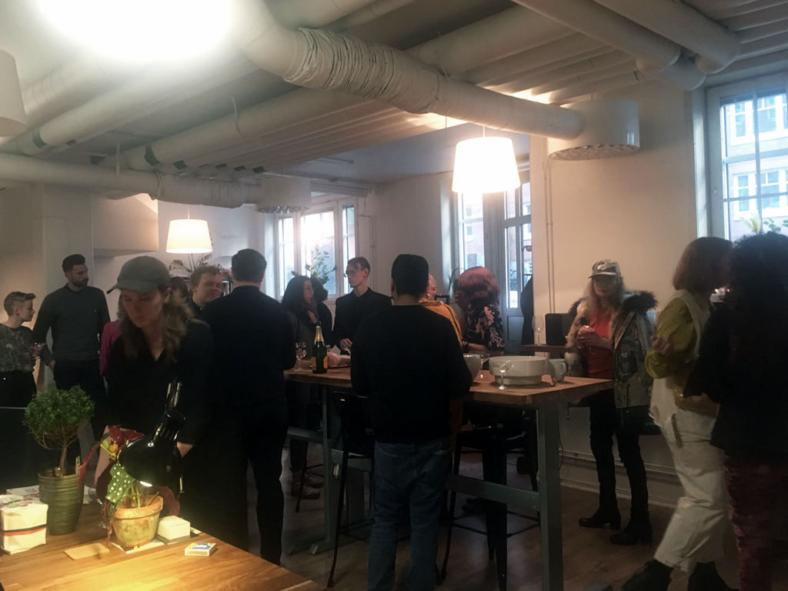
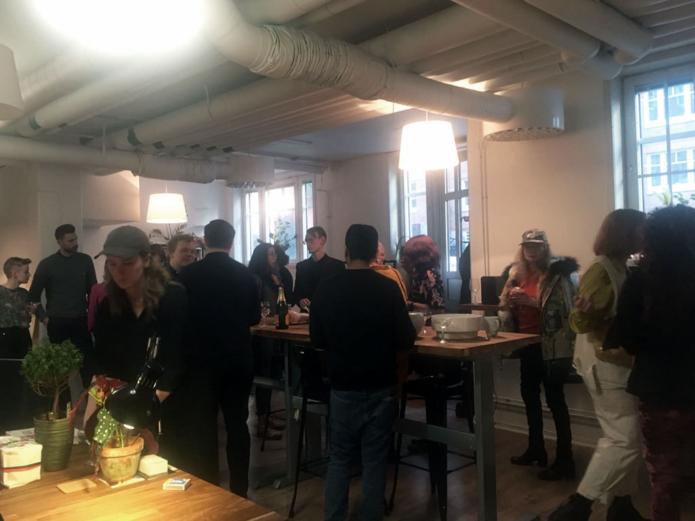

Each last Thursday of the month everyone is invited to bring their drawings, paintings, photo's, prints etc. All levels of creatives are welcome. Doesn’t matter if you’re an amateur, worldwide known artist, or hobbyist..
Rules:
- Come with one piece of art
- Almost anything goes
- Stay within an A2 format
- We don’t frame, or print
- We just hang your work
- Have it ready to be hung
- Name your price
- We take 30% per sold item
- Jus keep it appropriate
- Nothing NSFW
During this meetup we're working on potential prototypes for soltutions to a more sustainable city.
We have a clear idea about our challenges, now we need to put the will, needs and skills together. What to do next and what role can you play?
We're working on realizing new ideas using Lightning Decision demo's. Anyone is welcome to join. Last meeting we ended with interesting topics around:
How might we get people in Stockholm to open up more, get people together and try new things? And how might we foster, communicate and introduce spirituality?
Are you interested in a great side-project? Come to our next meetup.
Come and give a second life to your old clothes. Bring your discarded pieces and have them screen printed on the spot with 1 of our 4 designs. Shop for second-hand upcycled garments, including Perfectly Fine merch and other printed pieces. Or swap & donate you clothes and textiles with Zero Waste Stockholm.
Fast fashion has a huge environmental impact and these are some simple ways to make a difference. Allow yourself to still renew your wardrobe and at the same time be sustainable by buying second hand, repair, or upcycle your clothes.
Extending the life of clothing by a further 9 months would reduce carbon, waste and water footprints by 20-30%
Ongoing project supporting the youth strikes. Artists from all over the world designed a protest poster to be used during the past and future events. #creativesforfuture
With Perfectly Fine we're wondering what should the future look like and how can we play a role in shaping it? Creativity offers inspiring visions of a better future, shaping the space of possibilities.
What does it mean to publicly voice the changes we want to bring about? What if the meaning of protest would be discussed from a positive standpoint?
We’re building climate awareness by supporting the climate strikes all over the world.
The poster made by over 30 artists are shared for free for everyone to download, print and use during the strikes.
If you're using one of the posters, don't forget to take a picture and share with us, or tag us!
Each last Thursday of the month everyone is invited to bring their drawings, paintings, photo's, prints etc. All levels of creatives are welcome. Doesn’t matter if you’re an amateur, worldwide known artist, or hobbyist..
Rules:
- Come with one piece of art
- Almost anything goes
- Stay within an A2 format
- We don’t frame, or print
- We just hang your work
- Have it ready to be hung
- Name your price
- We take 30% per sold item
- Jus keep it appropriate
- Nothing NSFW
We have a lot of challenges ahead of us and we know we can’t wait on somebody else to solve them. We have the will, needs and skills, all we need is to put them together. What to do next, where to go from here, and what role can you play?
We're working on realizing new ideas using Lightning Decision Jams to prototype solutions to a more sustainable city. Come together with like-minded people, to discuss ideas, brainstorm about solutions and work towards feasible projects to collaborate on. Anyone is welcome to join.
Each last Thursday of the month everyone is invited to bring their drawings, paintings, photo's, prints etc. All levels of creatives are welcome. Doesn’t matter if you’re an amateur, worldwide known artist, or hobbyist..
Rules:
- Come with one piece of art
- Almost anything goes
- Stay within an A2 format
- We don’t frame, or print
- We just hang your work
- Have it ready to be hung
- Name your price
- We take 30% per sold item
- Jus keep it appropriate
- Nothing NSFW
What is branding, how to use it and why should you? This is a hands-on workshop working on how to better reach your audience and create visibility for your work, allowing you to communicate more clearly to your audience and clients.
It can be hard competing in the field of arts or design as a freelancer. Learn how to put yourself out there and sell yourself.
Durin the workshop we set a general inquiry of your needs, think about your goals and find your ‘originality’ to make you stand out. We gain control over your first impression with your audience/clients and find your voice, by working through some simple exercises.
A new creative workspace for freelance practices, collaborations, project development, events and workshops.
We opened with drinks and exhibition of the poster project for the climate strikes #creativesforfuture.
SBG18 is a physical space for 6-8 interdisciplinary creatives and all the ideas that need a location, to be able to work together both for our day jobs, as well as projects and events.
Ever since Greta has been engaging in a self proclaimed school strike against environmental negligence we have been searching for ways to support the movement. Greta has since gained thousands of fellow protestors and activists worldwide through #fridaysforfuture and we provided some protest signs.
Perfectly Fine has since this first event invited artists to create their versions of the protest poster. Our goal is to share this work so that individuals can spread awareness and use these posters as a form of protest in stance with the other participants in the Global Strike For Future.
Living a zero-waste lifestyle was never ment for individuals to take on. It's supposed to be a system change for big corporations and mass reach.
What is more convenient, more lazy way of consuming our favorite snacks and drinks? The vending machines on your way from work, or when there's nothing else around.
So what if we combined the easiest to adapt system with one of the most impossible, but necessary habits? A vending machine with good products, good for you, good for the world. Products with no excessive waste and a guilt free conscience.
Idea phase
Lookig for: Engineers, Marketers, Retail Experts, Volunteers and Legal Experts
Re-Store: Screen print, swap, donate
Come and give a second life to your old clothes. Bring your discarded pieces and have them screen printed on the spot with 1 of our 4 designs. Shop for second-hand upcycled garments, including Perfectly Fine merch and other printed pieces. Or swap & donate you clothes and textiles with Zero Waste Stockholm.
Fast fashion has a huge environmental impact and these are some simple ways to make a difference. Allow yourself to still renew your wardrobe and at the same time be sustainable by buying second hand, repair, or upcycle your clothes.
Extending the life of clothing by a further 9 months would reduce carbon, waste and water footprints by 20-30%
Each last Thursday of the month everyone is invited to come to SBG18 and bring their drawings, paintings, photo's, prints etc. All levels of creatives are welcome. Doesn’t matter if you’re an amateur, worldwide known artist, or hobbyist..
Rules:
- Come with one piece of art
- Almost anything goes
- Stay within an A2 format
- We don’t frame, or print
- We just hang your work
- Have it ready to be hung
- Name your price
- We take 30% per sold item
- Jus keep it appropriate
- Nothing NSFW
Lightning Brainstorm Workshop
We have a lot of challenges ahead of us and we know we can’t wait on somebody else to solve them. We have the will, needs and skills, all we need is to put them together. What to do next, where to go from here, and what role can you play?
We're working on realizing new ideas using Lightning Decision Jams to prototype solutions to a more sustainable city. Come together with like-minded people, to discuss ideas, brainstorm about solutions and work towards feasible projects to collaborate on. Anyone is welcome to join.
Are you interested in the Lightning Worskshops or other Design Sprints, contact us for a initial talk.
Global Climate Strike for Future
We’re building climate awareness by supporting the strikes all over the world. Artists from all over the world designed a protest poster you can download, print and use to protest with.
Brief: What will the future look like and how can we play a role in shaping it? Creativity offers inspiring visions of a better future, shaping the space of possibilities.
What does it mean to publicly voice the changes we want to bring about? What if protests would be approached from a more positive standpoint?
Feel free to use one of the posters, and don't forget to take a picture and share with us, or tag us!
What is branding, how to use it and why should you? This is a hands-on workshop working on how to better reach your audience and create visibility for your work, allowing you to communicate more clearly to your audience and clients.
In this useful workshop participants learn how to use branding to better reach their audience, creating a stronger identity towards clients and better the visability for their work. Learn how to put yourself out there and sell yourself.
It can be hard competing in the field of arts or design as a freelancer.
We set a general inquiry of your needs, think about your goals and find your ‘originality’ to make you stand out. We gain control over your first impression with your audience/clients and find your voice, by working through some simple exercises.
SBG18, creative work and event space
A new creative workspace for freelance practices, collaborations, project development, events and workshops.
SBG18 is a physical space for about 8, to 10 interdisciplinary creatives in a communal space for individual and collective practices. A physical space for all the ideas that need a location/space, to be able to work together both for our day jobs, as well as side-projects and events hosted after work. We have Graphic Designers, Motion Graphics, Animators and Developers. If you’re looking for any of these services, or are looking for a creative working space, don’t hesitate to contact us!


eart(H)_george(S).jpg)


 
